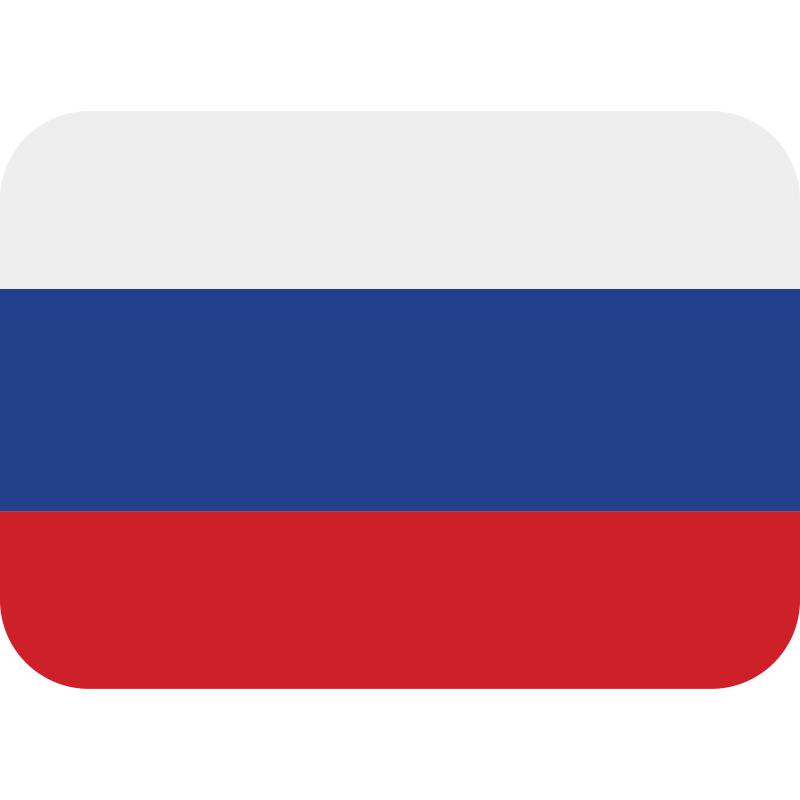

Iuliia Goriacheva
📍 Berlin, Germany
Arabist | Film Researcher
I research classical Arabic texts through philology, philosophy of culture, and visual arts. My interdisciplinary approach bridges literary analysis with film studies and art history to trace conceptual transformations. This methodology reveals how Islamic philosophical traditions evolve in cinematic and artistic adaptations. Through both scholarly and creative practice, I examine the dialogue between textual heritage and visual culture.
Research Areas
Arabic Studies
Film Studies
Philosophy of Culture
Experience
Student Researcher, Department of Arabic Studies
Freie Universität Berlin
Education
Arabic Studies | Master of Arts
Freie Universität Berlin
2023-Present
Arabic Philology | Bachelor of Arts
Moscow State University
2019-2023
Achievements
DAAD Scholarship for Master’s Studies
2023
Awarded the DAAD international scholarship to pursue a Master’s in Arabic Studies at Freie Universität Berlin.
Languages



Russian